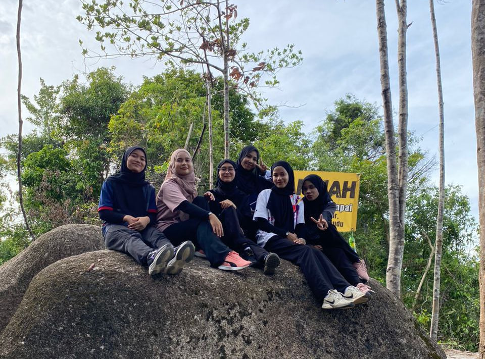

I like to hike with friends in my free time. Hiking can reduce negative thoughts and stress, and it can keep the body healthy. Furthermore, I was able to strengthen my relationships with friends.
I also like to play chess. From elementary school until now, I have also participated in chess competitions. Chess teaches you how to win and lose. Of course, everyone loves to win, but it's important to learn how to accept defeat. As the saying goes, "Sometimes you give a lesson, and sometimes you take a lesson!".